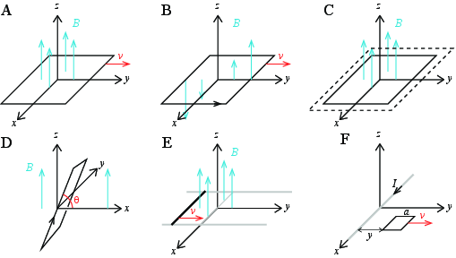

Finn emf'en, både størrelse og retning, som er indusert i kretsen for situasjonene som er vist i figuren.

a) (Figur A) En kvadratisk krets i \( xy \)-planet med sidekant \( 2a \) beveger seg med konstant hastighet \( v \) langs \( x \)-aksen gjennom et homogent magnetfelt \( \vec{B} = B_0 \z \).
b) (Figur B) En kvadratisk krets i \( xy \)-planet med sidekant \( 2a \) beveger seg med konstant hastighet \( v \) langs \( x \)-aksen gjennom et magnetfelt \( \vec{B} = \frac{B_0}{b}x \z \). Venstre sidekant i kretsen er i en posisjon \( y \).
c) (Figur C) En kvadratisk krets i \( xy \)-planetutvider seg i alle retninger med hastighet \( v \) og er i et homogent magnetfelt \( \vec{B} = B_0 \z \). Ved tiden \( t = 0 \) er sidenkanten \( 2a \).
d) (Figur D) En plan, kvadratisk krets med sidekanter \( 2a \) er rotert en vinkel \( \theta \) om \( y \)-aksen. Vinkelen \( \theta \) øker med vinkelhastigheten \( \omega \): \( \theta = \omega t \). Kretsen er i et homogent magnetfelt \( \vec{B} = B_0 \z \).
e) (Figur E) En krets består av to lange ledere langs \( y \)-aksen (i grått) samt en leder med lengde \( 2a \) som forbinder de to lederne langs $x$y-aksen som vist i figuren. Den siste kanten i kretsen beveger seg langs \( y \)-aksen med en hastighet \( v \) og passerer \( x \)-aksen ved \( t=0 \). Det er et homogent magnetfelt \( \vec{B} = B_0 \z \).
f) (Figur F) (Vanskelig. Hopp over hvis du ikke ser hvordan denne skal løses) Det går en strøm \( I \) i en ledning langs \( x \)-aksen. En kvadratisk krets med sidekant \( a \) ligger i \( xy \)-planet i en avstand \( y \) fra \( x \)-aksen. Kretsen beveger seg i positiv \( y \)-retning med hastigheten \( v \).